2026-09-19。認識合わせ資料（承認済み・すべて推奨案）の各項目を、ローカルの実画面（テストアカウント）で操作して確認した記録。 ✅＝設計どおり／△＝設計と少し違う（理由つき）／未＝未実装。E2E は自動テスト名。
| 設計の項目 | 判定 | 実装・確認したこと |
|---|---|---|
| 5段階（見積中／受注／着工／完了／失注）を現場ごとに設定 | ✅ | 現場マスタの一覧（ステータス列のプルダウン）と現場詳細から変更。図A1・A2。E2E admin.site-status |
| ❓1 有効／無効は廃止し一本化 | ✅ | 「無効化／有効化」ボタンと「有効／無効化済み」タブを撤去。タブ＝進行中／完了／失注／すべて（図A2）。 内部の active 列は当面残しDBトリガで導出（A-3 で撤去）。旧URL ?status=inactive は完了タブに読み替え |
| 既存データ：有効→着工／無効→完了 | ✅ | migration で backfill。ローカルで 28件→着工。本番は SEED 122件→着工／64件→完了になる見込み（適用時に件数を報告） |
| 完了にする時は終了日（既定＝今日） | ✅ | 図A3。既に終了日が入っていればそのまま |
| 失注にする時は理由（任意） | ✅ | lost_reason に保存。E2E で確認 |
| 戻す操作も可。操作ログに残る | ✅ | 完了→着工を E2E で確認。operation_logs に「現場を完了に変更（現場名・遷移）」 |
| ❓3 自動では変えず「着工／完了にしますか？」の目印 | ✅ | 受注で開始日到来／着工で終了日経過の行に目印ボタン（1クリックでモーダル）。自動変更なし |
| ❓4 新規の初期値：管理画面＝受注／作業員アプリ＝着工 | ✅ | 管理画面の追加モーダルは「受注」既定（変更可）。LIFF・協力業者請求からの現場作成はDB既定＝着工。見積からの昇華＝受注 |
| 1-3 必須項目（見積中＝現場名／受注・着工＝住所・工期開始・責任者／完了＝＋終了日） | ✅ | 編集モーダルの＊印と保存ガードがステータスで変わる（図A4）。ステータス変更でも不足があれば止めて「編集から入力」を促す（図A5）。表は shared/site-status.ts に1箇所 |
| ❓2 元請けは任意のまま | ✅ | 変更なし |
| 一括変更 | ✅ | 「ステータス一括変更」→複数選択→変更（図A2右上）。E2E で確認 |
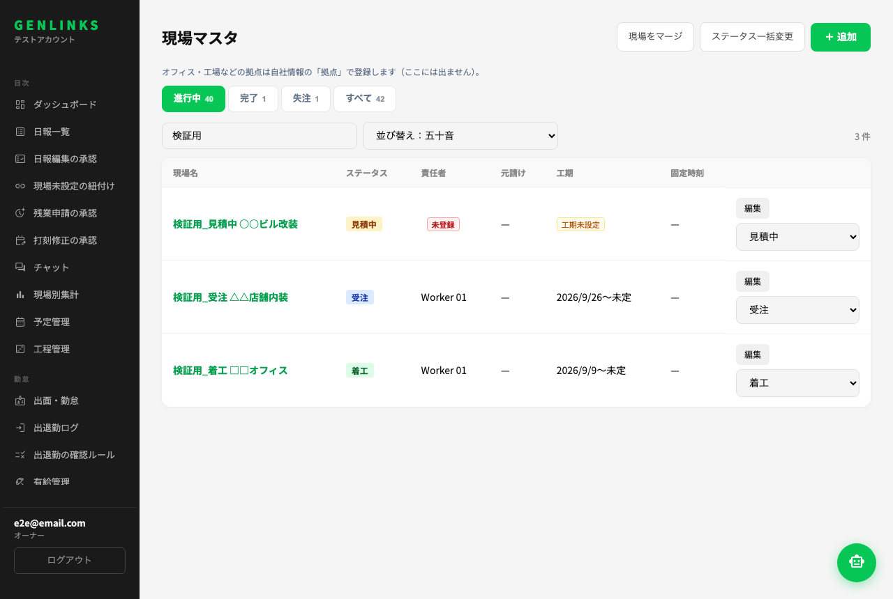
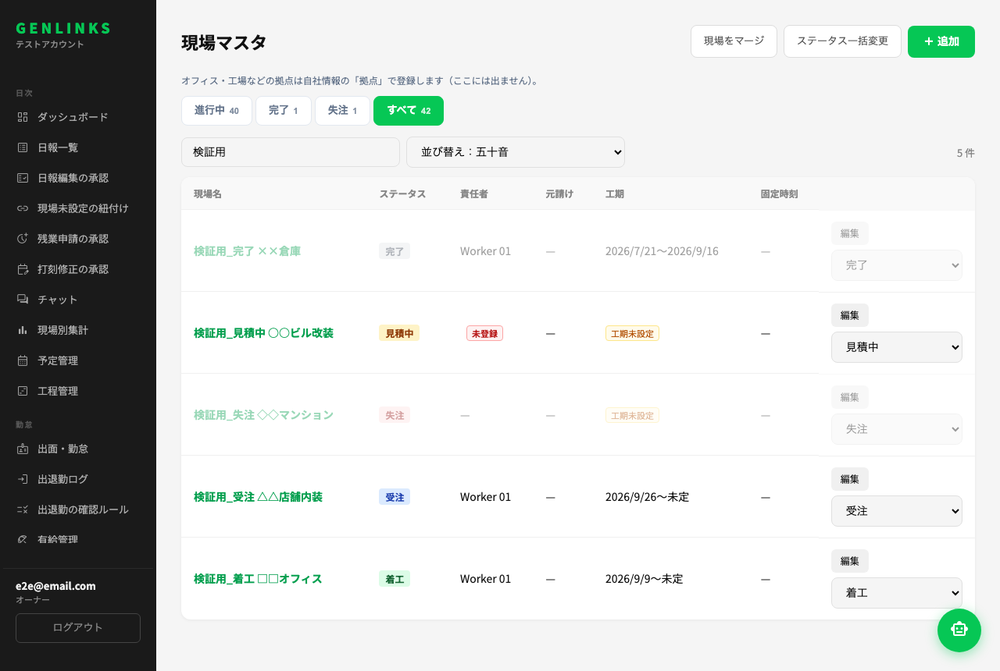
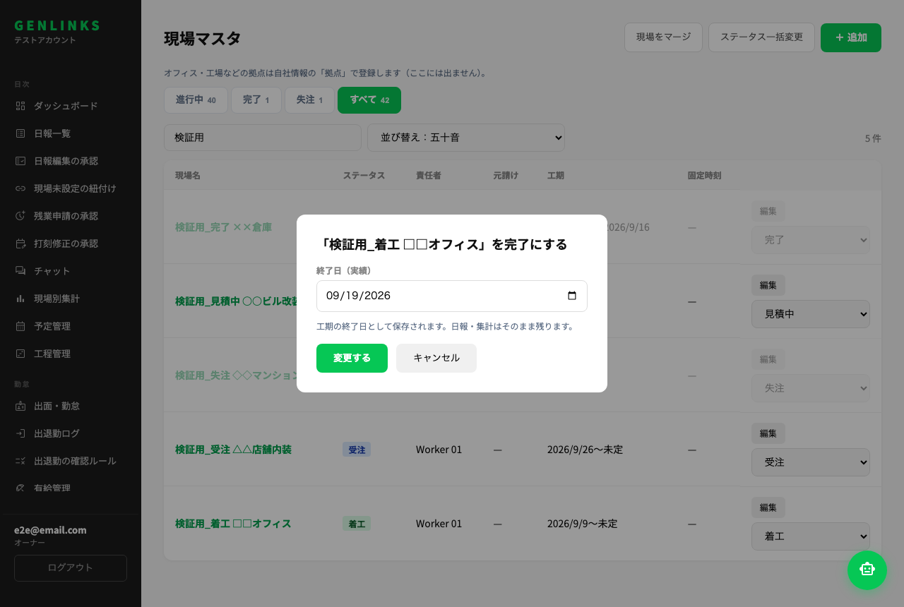
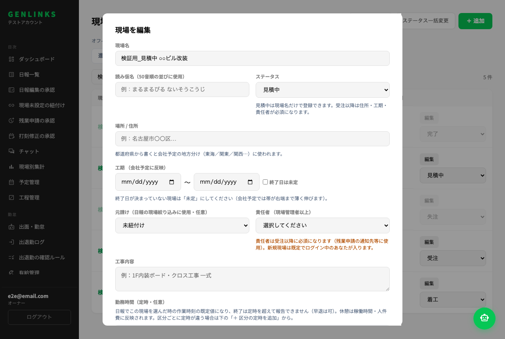
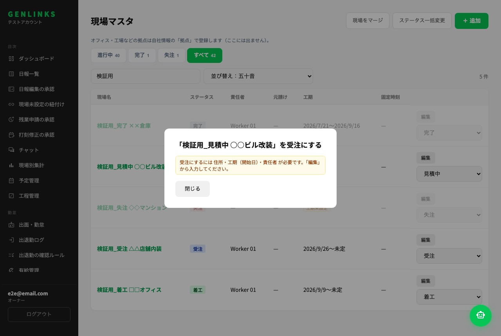
| # | 画面 | 判定 | 実装・確認したこと |
|---|---|---|---|
| 1 | 現場マスタ一覧 | ✅ | 既定＝見積中・受注・着工／完了・失注はタブ（図A1・A2） |
| 2/12 | 日報の現場プルダウン（❓5=A） | ✅ | 既定＝受注・着工。「見積中・終了した現場も表示」で見積中・完了（図L1）。失注は出ない。管理画面側の日報一覧には現場プルダウンが無いため対象外 |
| 3/14 | 予定（従業員）の現場候補 | ✅ | 見積中・受注・着工。E2E admin/liff.site-status-visibility |
| 4/15 | 工程管理・会社予定 | ✅ | 既定＝受注・着工。切替で見積中（工期あり）・完了（終了日が直近90日）（図A6・A7） |
| 5/6 | 現場別集計・ダッシュボード・出面・ガソリン按分 | △ | 元から「日報がある現場」を集計しておりステータスを見ない＝「日報がある現場はステータスに関わらず含める」は成立。「受注を絞り込みで出す」等のステータス絞り込みUIは付けていない（集計は実績ベースで十分と判断。要るなら追加） |
| 7/17 | チャット一覧・現場チャット | ✅ | 進行中＋「終了した現場のチャットを表示」（図A8・L5） |
| 8 | 見積・発注の現場選択 | ✅ | 見積中・受注・着工。見積書（受領）は失注を「（失注）」付きで参照可 |
| 9 | 協力業者請求・未入金 | ✅ | 着工・完了（完了は「（完了）」表記）。★以前は終わった現場を新規明細で選べなかったが、承認済みマトリクスに合わせて選べるように変更 |
| 10 | 現場未設定の紐付け | ✅ | 受注・着工＋「終了した現場」グループ |
| 11 | 道具の持出先 | 未 | 持出UI自体が道具②（別チケット・要件定義済み）。表の定義（tool_destination）だけ用意済み |
| 13 | 出退勤の現場選択 | — | 出退勤は現場に紐づかない打刻に変わっており（2026-08-27）、現場選択が存在しないため対象外 |
| 16 | 現場情報一覧（作業員） | ✅ | 受注・着工＋切替で見積中・完了。ステータスバッジ付き（図L2） |
| 18 | 現場に紐づかない経費の現場 | ✅ | 着工・受注（「この日に出勤した現場」は現行のまま） |
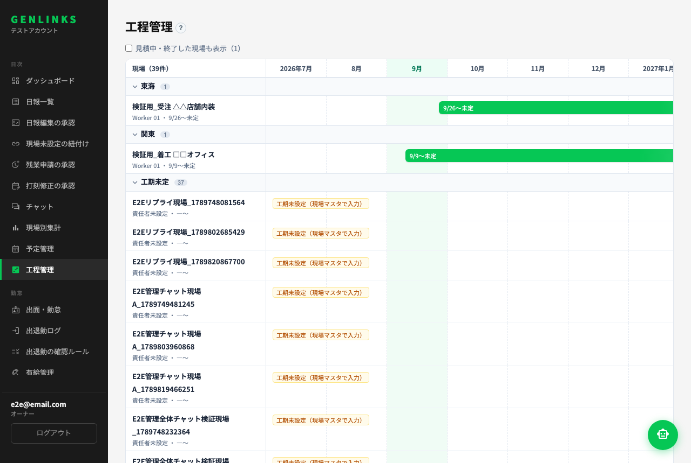
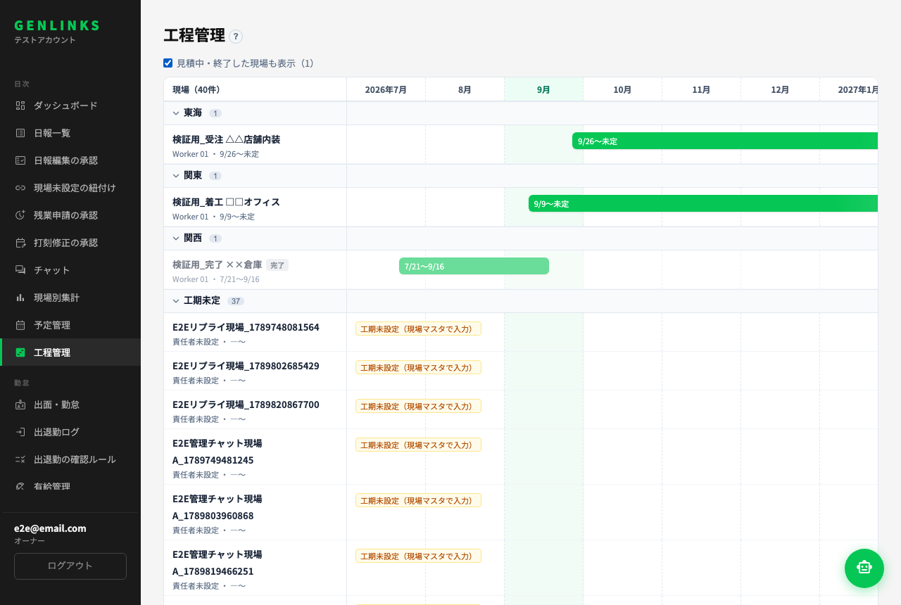
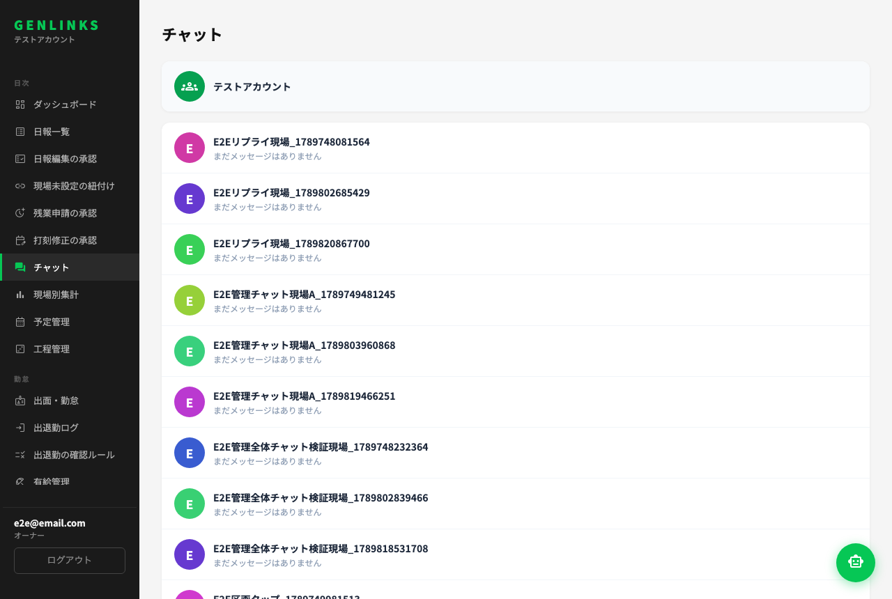
| 設計の項目 | 判定 | 実装・確認したこと |
|---|---|---|
| ❓7 予定管理の中にタブ（従業員／車両／道具／会議室…） | ✅ | 管理画面（図B1）・作業員アプリ（図L3）とも。「使う機能」でONの種類だけ出る |
| 日×対象のマトリクス。セル＝誰／現場。予約＝枠線・使用中＝塗り | ✅ | 図B1〜B3。終了＝グレー。自分の予約は緑 |
| 列見出しの「今の状況」（空き／予約あり／使用中、道具は持出中・誰・現場・N日目） | ✅ | 図B1（車両）・図B2（道具：持出中・Worker 01・現場・1日目） |
| 2-2 対象（複数可）・使う人・同乗者（車両）・現場・期間・時間帯・用途メモ | ✅ | 図B4。同乗者は車両のみ |
| ❓8 重なり：車両・道具＝警告のみで保存可／会議室＝不可 | ✅ | 図B4 の警告→「重ねて保存」。会議室は「同じ時間帯には予約できません」で保存不可（図B5）。E2E admin.resource-calendar / resource-rooms |
| ❓9 作業員は自分の予約／他人の変更・取消は管理者のみ | ✅ | EF で判定（画面を迂回しても通らない）。E2E liff.resource-calendar（一般作業員に落として確認） |
| お知らせ：重ねられた時／管理者に変更・取消された時 | ✅ | 作業員アプリのお知らせ（ベル）に届く。リンクで該当タブが開く |
| 状態遷移：道具＝QR持出で使用中・返却で終了 | ✅ | DBトリガ（tool_events）。E2E admin.resource-tools。※持出/返却のQR画面自体は道具② |
| 状態遷移：車両＝日報で選ぶと使用中 | △ 未 | 「日報の車両欄を車両マスタからの選択にする」（要件定義済み・別チケット）が前提。そのチケットで日報保存時に当日予約を使用中にする（今は予約のまま） |
| 状態遷移：会議室＝開始時刻で使用中・終了で終了 | △ | 自動更新は入れていない（表示は「予約」のまま）。列見出しの「使用中／予約あり」は今日の予約から出る。要るなら時刻で表示だけ切り替える |
| 作業員アプリでも閲覧と自分の予約 | ✅ | 図L3・L4。予定管理のタブ |
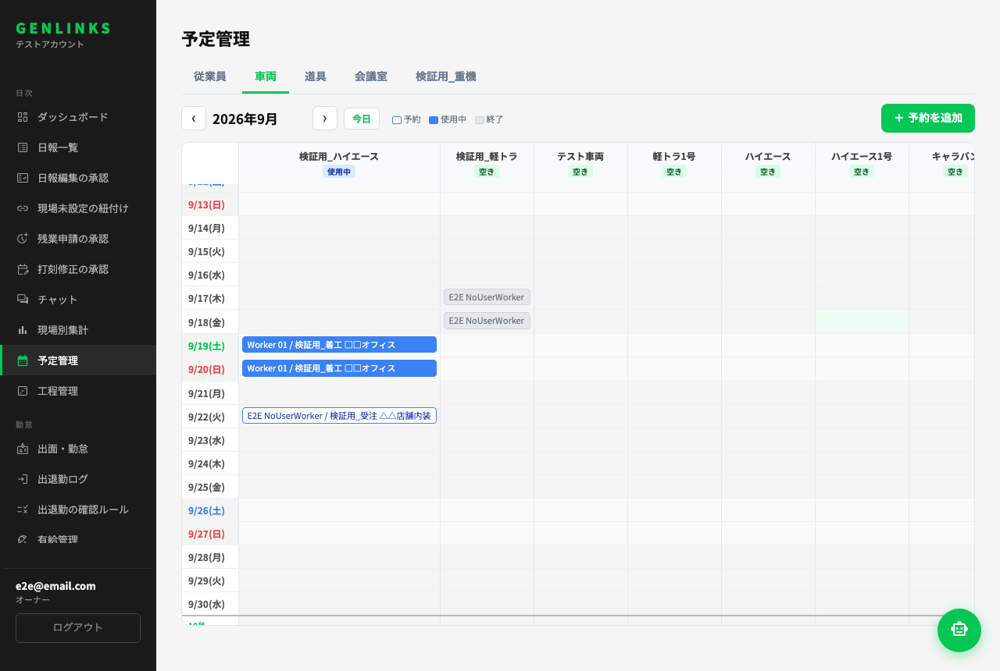
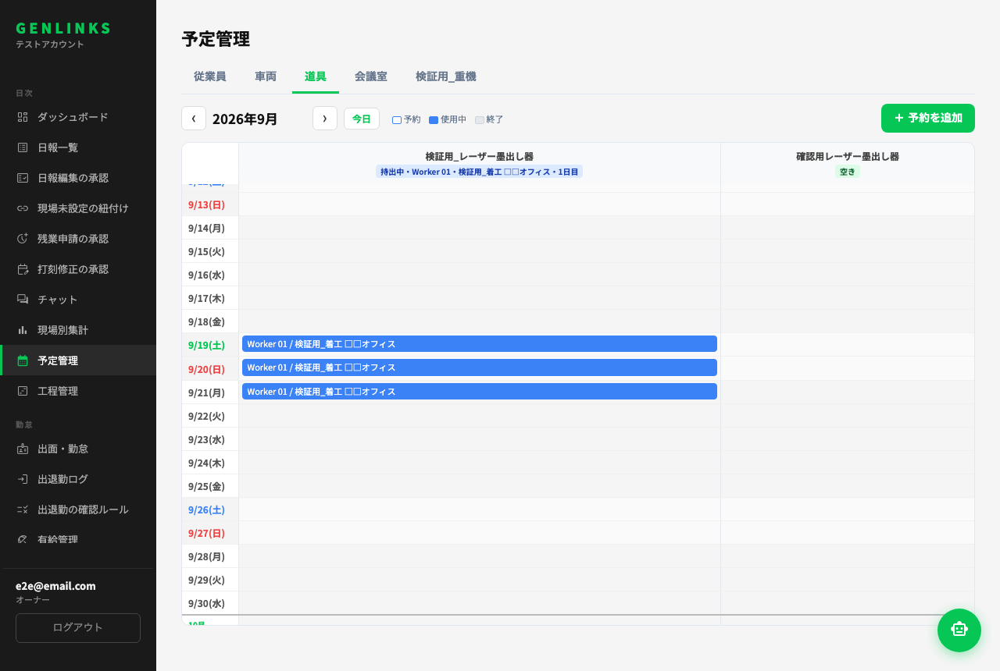
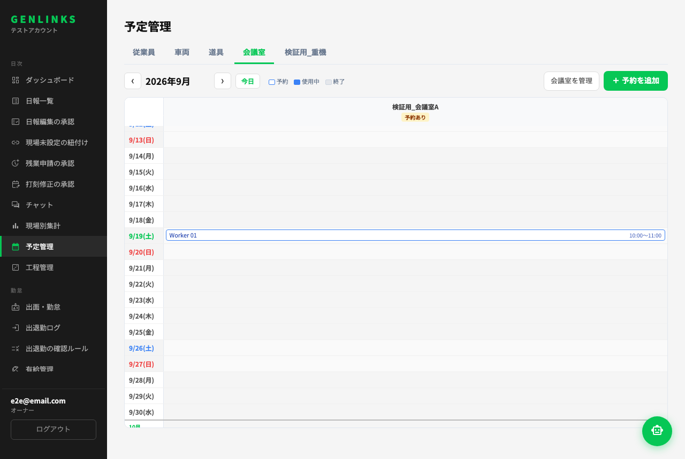
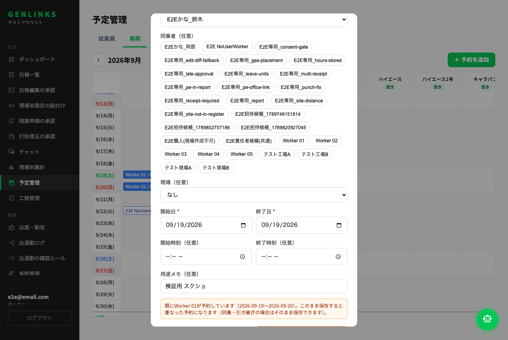
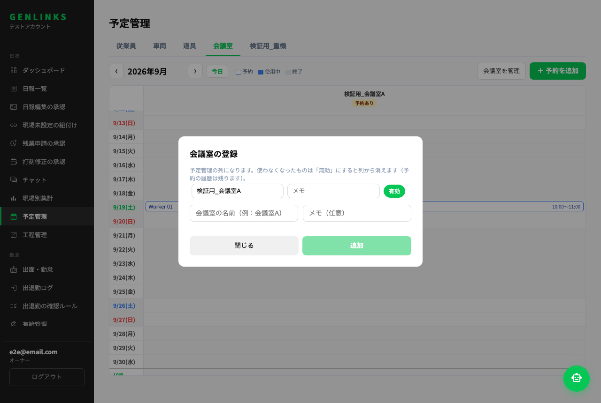
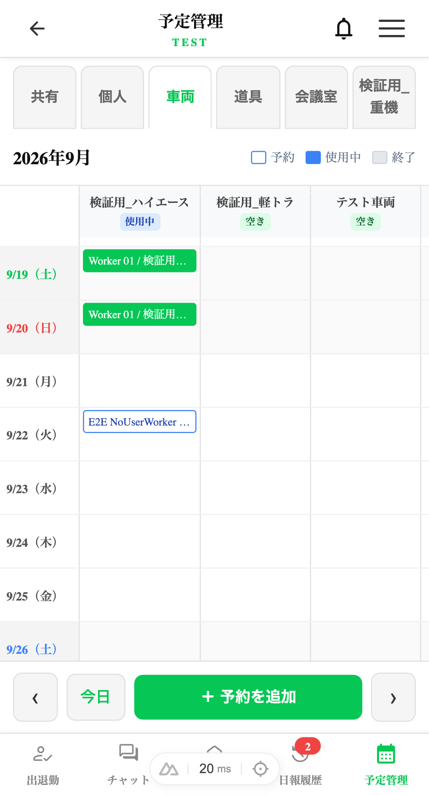
| 設計の項目 | 判定 | 実装・確認したこと |
|---|---|---|
| 設定「使う機能」でオーナーが機能ON/OFF（見積・発注／車両／道具／会議室） | ✅ | 図B6。OFF＝メニュー・タブ・作業員アプリの導線・EFの入口を閉じる。データは残る。E2E admin.features-toggle |
| 既定：SEED＝車両ON・道具ON・会議室OFF | △ | 設計メモは「既存テナントにONを書き込む」だったが、車両・道具は未設定＝ONを既定にした（行を書き忘れてメニューが消える事故を避ける。結果は同じ）。会議室・見積は未設定＝OFF |
| ❓10 会社独自の種類を最初から追加可（名前・写真・メモの台帳） | ✅ | 設定「予定管理の独自の種類」で追加・改名・重なり不可・時間帯必須・ON/OFF（図B6下）。対象はタブの「○○を管理」（名前・メモ・有効）。写真は未対応（列は用意済み・要るなら追加） |
| ❓11 作る順番（A→B-0→B-1→B-2→B-3） | ✅ | この順で実装。A-3（active列の撤去）だけ A-2 が本番に出た後 |
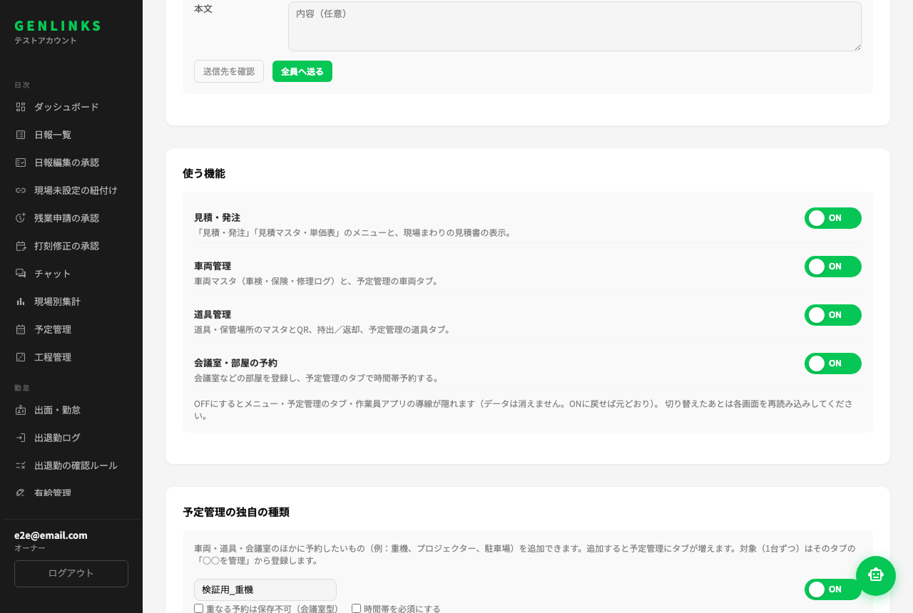
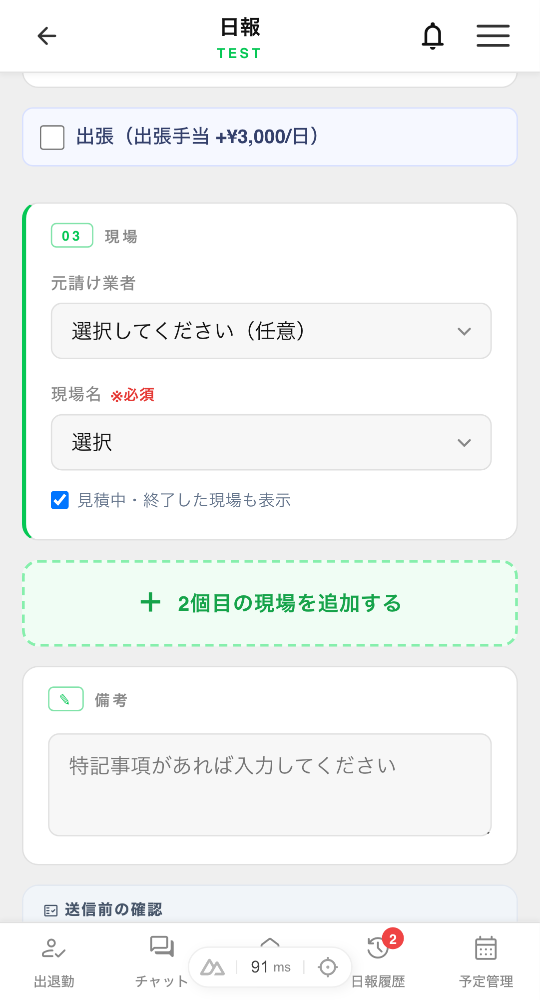